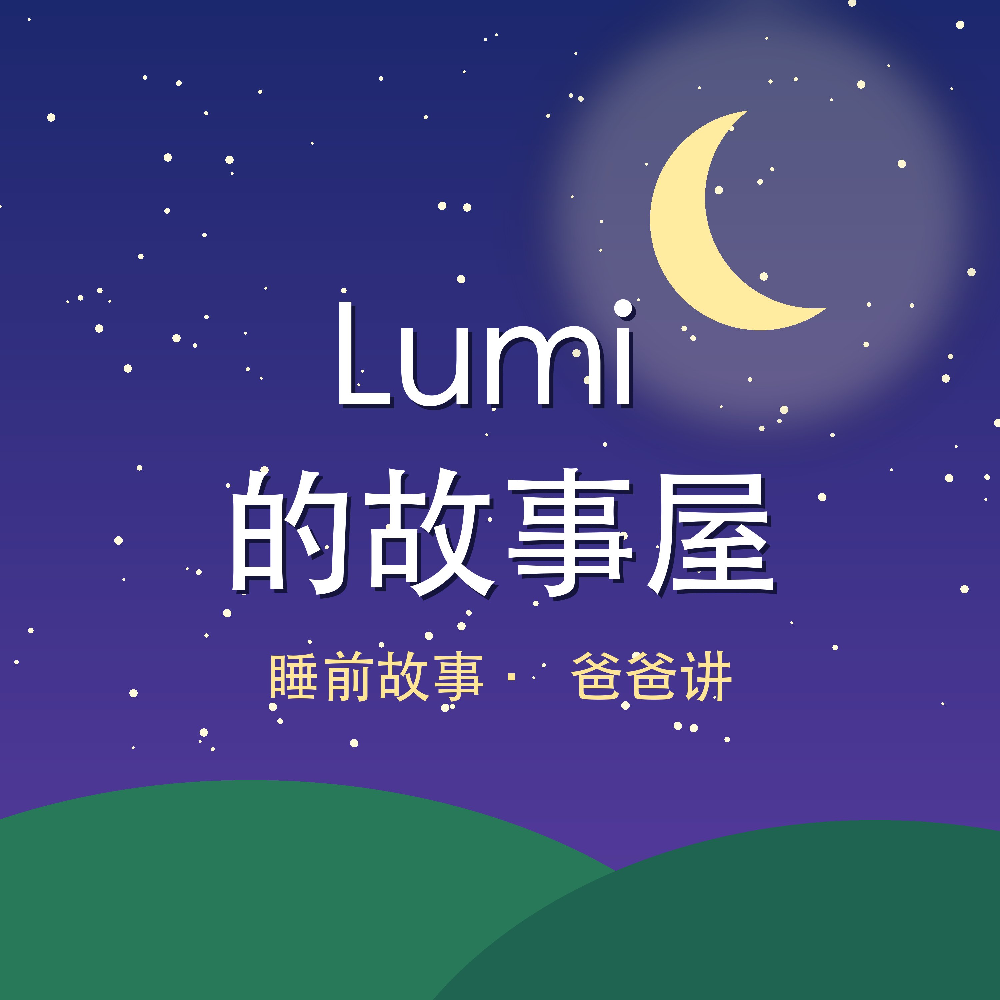

- S1·01鲁米超人和三个偷蛋糕的小偷3:29
三个小偷偷走了面包店奶奶的生日大蛋糕，鲁米超人用泡泡光、痒痒光和一个好主意，把他们一个一个抓住，还教会了他们分享。
- S1·02鲁米超人、小恐龙咚咚和打嗝的大怪兽5:26
一只大怪兽在山坡上吼个不停，把小镇的路灯都震歪了。鲁米超人、闪电小子和小恐龙咚咚一起出发，最后是个子最小的咚咚，听出了大怪兽真正的秘密。
- S1·03鲁米超人、小兔子棉棉和月亮上的星星5:32
天上的星星一颗一颗不见了。鲁米超人带着小兔子棉棉飞上月亮，发现星星们躲在月亮坑里不敢回家，最后是棉棉那对嫌太长的大耳朵，把星星们一颗一颗送回了天上。
- S1·04鲁米超人、铁甲小子和八只手的小章鱼5:39
公园里的玩具一个一个不见了，滑梯后面有个声音一直喊“我的！都是我的！”。鲁米超人、闪电小子、铁甲小子和小恐龙咚咚一起出发，最后鲁米超人递出了自己的冰激凌，八只手的小章鱼才第一次空出了一只手。
- S2·01蓝闪电 Lumi：河中间的小熊猫6:15
小熊猫圆圆被困在河中间的大石头上。Lumi 跑得快，豆豆飞得高，可是都救不了她，最后他们用一根树枝搭起了一座小桥。
- S2·02蓝闪电 Lumi：小鸟啾啾的新家6:11
大风把小鸟啾啾的家吹到了地上。Lumi、豆豆和圆圆分头去找树枝、干草和羽毛，可新鸟窝要放回最高的树枝上，谁能送上去呢？
- S2·03蓝闪电 Lumi：大雾里的萤火虫6:12
大雾天，萤火虫小闪和妈妈走散了，越害怕，光越小。啾啾飞高看不见，豆豆飞得更高也看不见，最后大家靠耳朵找到了回家的路。
- S2·04蓝闪电 Lumi：大雨里的蚂蚁搬家6:30
大雨淹了蚂蚁的家，一百只小蚂蚁要搬到山坡上，可路上有个大水坑。大家用荷叶做了一条小船，这一次，最快的 Lumi 要学着跑得最轻、最稳。
- S2·05蓝闪电 Lumi：豆豆的火箭没电了5:55
豆豆的小火箭没电了，他觉得自己什么忙也帮不上。可是小兔子的风筝挂在高高的松树上，Lumi 跑不上去，圆圆爬不上去，啾啾解不开线……
- S2·06蓝闪电 Lumi：圆圆的惊喜生日6:08
今天是圆圆的生日，可她自己不知道大家知道。Lumi 跑遍森林请朋友，豆豆做了一个竹子水果蛋糕，可是森林里没有生日蜡烛，怎么办呢？